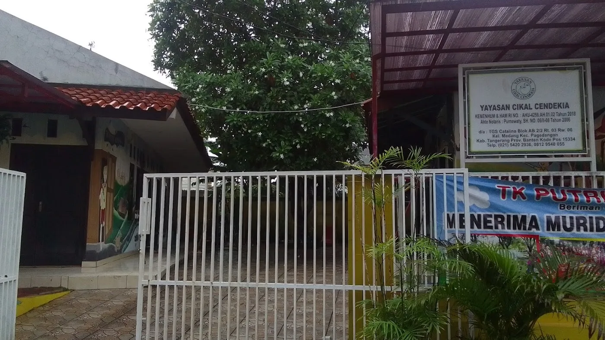
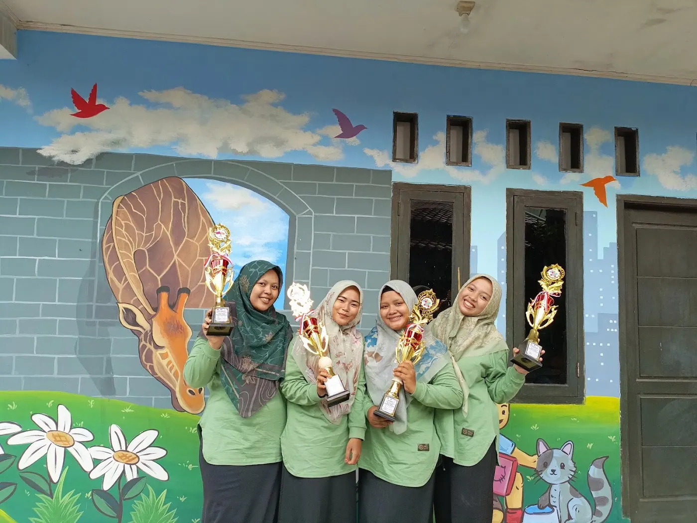

Belajar dengan arahan yang terstruktur dan terukur.
TK Putri Kembar Catalina menyelenggarakan pembelajaran di Gading Serpong. Informasi program dan pendaftaran melalui WhatsApp.

TK Putri Kembar CatalinaTaman kanak-kanak, Gading Serpong
5,0/5
penilaian di Google
Jam buka hari ini
TK Putri Kembar Catalina menyelenggarakan pembelajaran di Gading Serpong dengan arahan yang terstruktur. Informasi program, jadwal, dan biaya dapat ditanyakan terlebih dahulu sebelum Anda mendaftar.

- Penilaian di Google
- 5,0
- Lokasi
- Gading Serpong
- 0888-8471-872
Program kami.
Pilihan program yang disesuaikan dengan tujuan dan tingkat kemampuan peserta.
Peserta dibimbing secara terarah, dengan evaluasi kemajuan secara berkala.
Jadwal belajar serta rincian biaya disampaikan secara jelas sebelum mendaftar.
Proses pendaftaran dapat dimulai tanpa harus datang terlebih dahulu.
Sekilas tentang TK Putri Kembar Catalina.
Suasana dan dokumentasi dari TK Putri Kembar Catalina.
Kunjungi TK Putri Kembar Catalina di Gading Serpong.
Jl. Danau Poso Raya, Medang, Kec. Pagedangan, Kabupaten Tangerang, Banten 15334
- Senin
- 08.00–11.00
- Selasa
- 08.00–11.00
- Rabu
- 08.00–11.00
- Kamis
- 08.00–11.00
- Jumat
- 08.00–11.00
- Sabtu
- Tutup
- Minggu
- Tutup
Tanyakan program dan pendaftaran.
Pilih keperluan Anda, lalu pesan akan terbuka di WhatsApp dan dapat langsung dikirim kepada TK Putri Kembar Catalina.